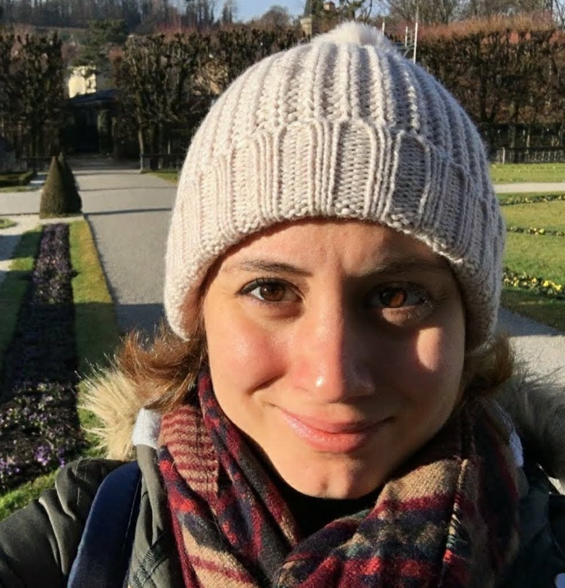

Dr. Yanina Biondi
I'm a physicist specialized in direct dark matter detection and rare events astroparticle physics. Since 2025, I'm a Group Leader at KIT.
Contact
yanina.biondi (at) kit.edu
I'm a physicist specialized in direct dark matter detection and rare events astroparticle physics. Since 2025, I'm a Group Leader at KIT.
yanina.biondi (at) kit.edu
I joined the Institute of Astroparticle Physics at KIT in March 2022, where I join Prof. Valerius group in DARWIN and KATRIN, as a Young Prep Pro fellow. I worked on setting up a dual phase liquid xenon TPC at KIT, where liquid xenon properties under the same conditions as DARWIN can be studied. Since 2025, I'm a Group Leader with my own Helmholtz Investigator Group grant.
I joined the Particle Astrophysics research group in February 2018 where I started working with my advisor Prof. Laura Baudis. I'm interested in rare events physics such as interactions given by dark matter candidates as axions and WIMPs, the nature of neutrinos (Majorana or Dirac particles). I worked with data analysis, MC simulations, statistical inference and in the development of new time projection chambers with LXe. I graduated in 2022, and I stayed as a postdoc until 2023.
MOTION is a time projection chamber with 80 kg of liquid xenon, serving as a testing platform for high-voltage delivery of around -200 kV and stability in LXe for next-generation dark matter detectors. The objective of this detector is to study the breakdown voltage of liquid xenon, which might depend on different factors such as surface area of the conductor and the purity of the liquid xenon, among others. The detector also serves as a platform to study spurious electron emission from electrodes, as well as the development of high voltage feedthroughs made out exclusively of radiopure materials.
To study challenges related to the construction and operation of a multi-tonne scale detector, we have designed and constructed a vertical, full-scale demonstrator for the DARWIN experiment at the University of Zurich. Here, we present the first results from a several-months run with 343kg of xenon and electron drift lifetime and transport measurements with a 53cm tall purity monitor immersed in the cryogenic liquid. We measured the drift velocity and the longitudinal diffusion coefficient of the electron cloud in the low electric field region, and discussed its modelling in current softwared and the expectation from transport models.
Learn MoreThe DARWIN observatory is a proposed next-generation experiment to search for particle dark matter and for the neutrinoless double beta decay. I worked in the simulations and the statistical inference of the sensitivity. My task consisted in modelling the background for this relative high energy proccess, investigatigate the signal model and the interaction topology in a LXe TPC, and the statistical framework using toy Monte Carlo and likelihood fits.
Learn MoreI'm working currently in the design of a 2.6 m TPC at the University of Zürich. I performed electrical and mechanical simulations, designed the TPC elements, produced 2D drawings and followed closely the material selection and production of parts. With a lot of luck, we will be able to install the TPC next Summer, after initial tests with a short purity monitor.
Learn More